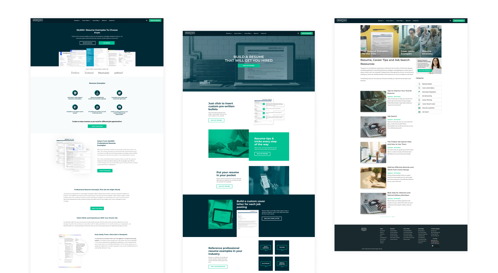
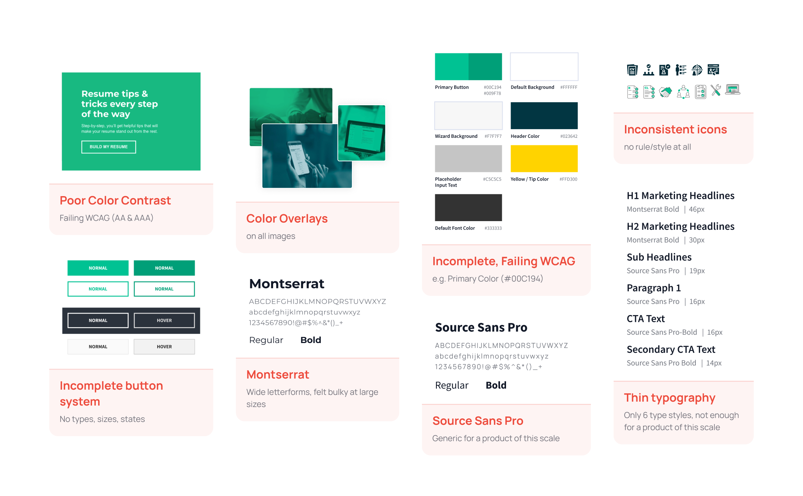
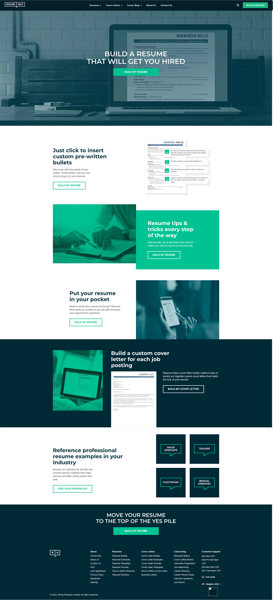

Before
The old theme — what we were working with
Teal-heavy, overlays on everything, no defined spacing tokens, no structured type hierarchy. It was functional — but it didn't scale. And it definitely didn't meet accessibility standards.

The old homepage — heavy teal overlays, poor contrast green buttons, no structured layout grid

Interior pages — inconsistent spacing, mixed icon styles, generic feel throughout

Old homepage — full Figma export

Old resume builder page — notice the inconsistent component usage

Old career blog listing — no clear design hierarchy

Old resume examples page — visually disconnected from the rest